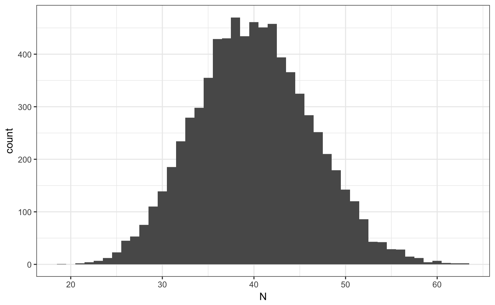
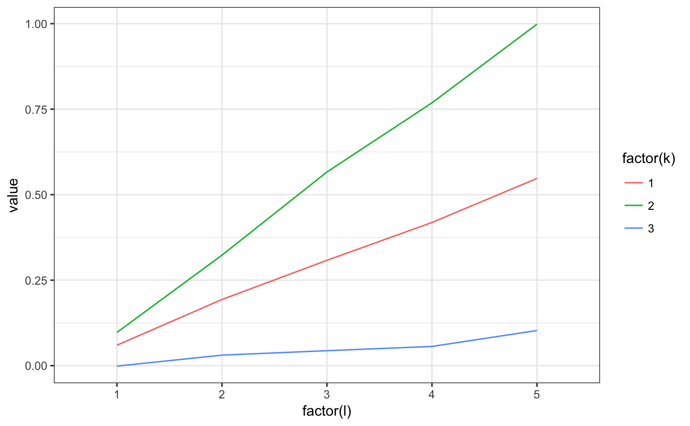
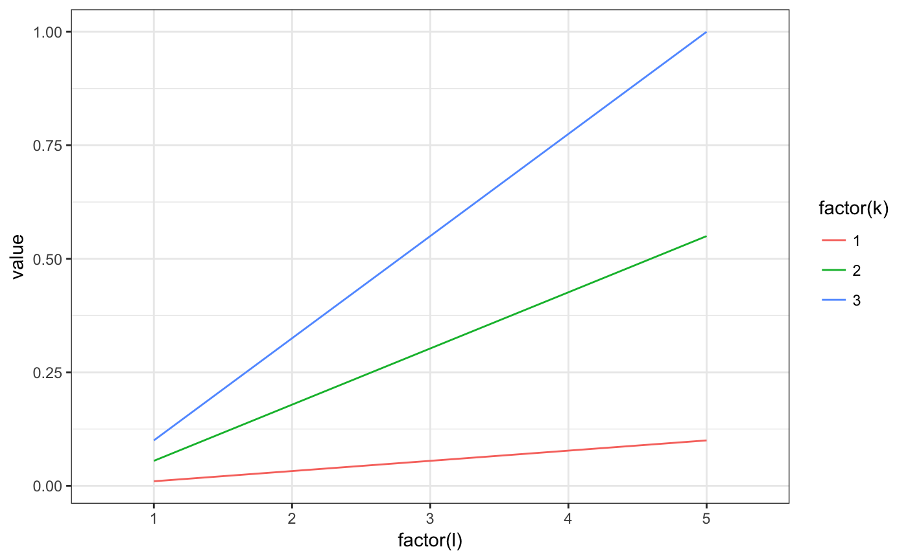
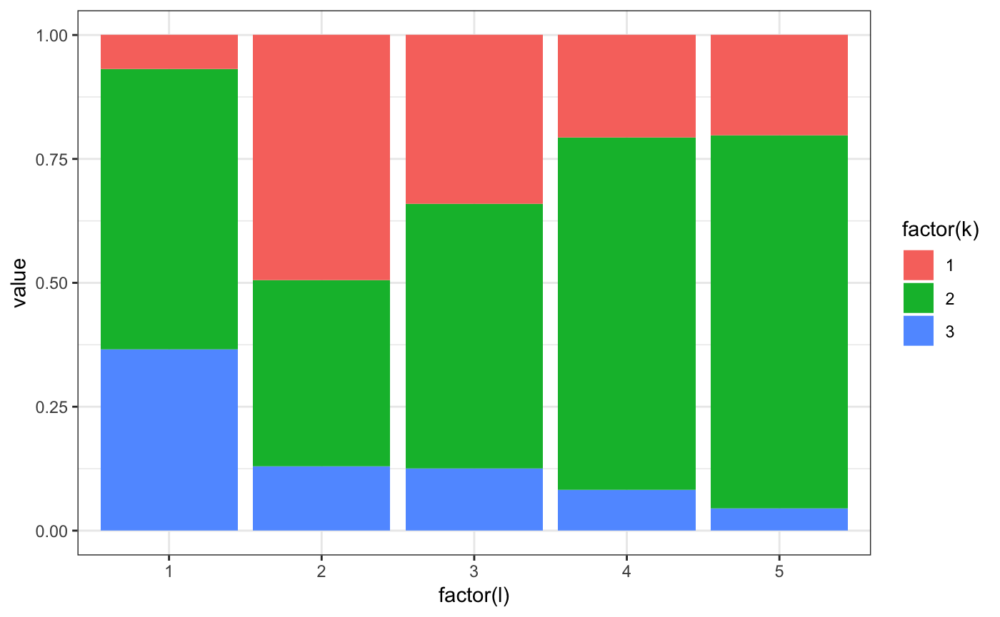
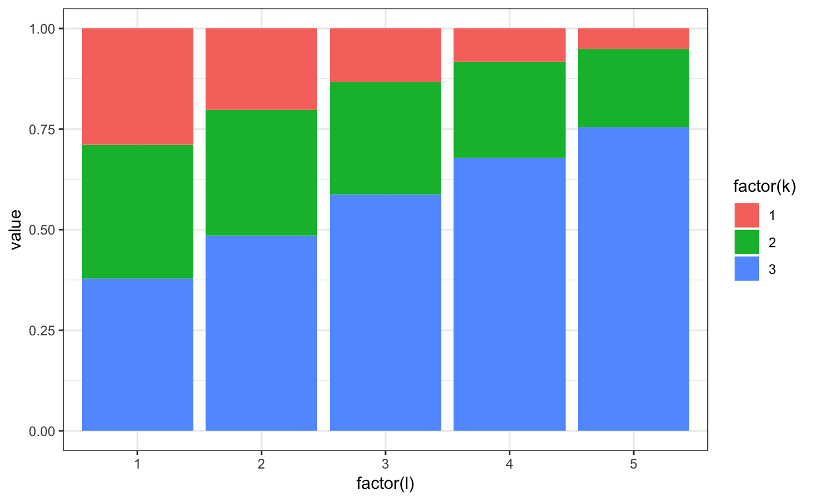

Simulating and estimating the mixture model
require(rblm)
require(knitr)
require(kableExtra)
options(knitr.table.format = "html") Simulating a data set
The interacted model has the following equations:
\[ Pr[ Y_{it} \leq y | k,\ell ] = \Phi( \mu_{k\ell}, \sigma_{k\ell}) \]
set.seed(324313)
model = m2.mixt.new(nk=3,nf=5,fixb=T,stationary = T)
# simple complementatiry
model$A1 = seq(0.1,1,l=model$nf) %o% seq(0.1,1,l=model$nk)
model$A2 = model$A1
# small variance
model$S1[] = 0.2
model$S2[] = 0.2
# simple sorting
model$pk0[1,,] = exp(3*model$A1)/rowSums(exp(3*model$A1))
# setting the number of movers and stayers
model$NNs = array(300000/model$nf,model$nf)
model$NNm = model$nf*toeplitz(ceiling(seq(100,10,l=model$nf)))
# creating a simulated data set
ad = m2.mixt.simulate.sim(model,fsize = 40)
# plot firm size distribution
ggplot(ad$sdata[,.N,f1],aes(x=N)) + geom_histogram(binwidth=1) + theme_bw()
Clustering firms
We start by extracting the measures that will be used to cluster
# constructing the measures, we use empirical CDF at each firm
ms = grouping.getMeasures(ad, # the data
"ecdf", # the type of moments to construct at the firm level
Nw=10, # number of point of support to use for the method
y_var = "y1") # variable to use to construct moments## INFO [2018-05-14 18:38:50] processing 7500 firms
## INFO [2018-05-14 18:38:50] computing measures...
## INFO [2018-05-14 18:38:50] computing weights...# classify into groups
grps = grouping.classify.once(ms, # input the measures to use
k = 5, # number of groups
nstart = 1000, # number of starting values for kmean
iter.max = 200, # max number of iterations for each kmean
step=250) # how often to show output## INFO [2018-05-14 18:38:50] clustering T=41.004107, Nw=10 , measure=ecdf
## INFO [2018-05-14 18:38:50] running weigthed kmeans step=250 total=1000
## INFO [2018-05-14 18:38:50] nobs=7500 nmeasures=10
## INFO [2018-05-14 18:38:52] [25%] tot=844.071415 best=844.071415 <<<<
## INFO [2018-05-14 18:38:53] [50%] tot=844.071415 best=844.071415
## INFO [2018-05-14 18:38:54] [75%] tot=844.071415 best=844.071415
## INFO [2018-05-14 18:38:55] [100%] tot=844.071415 best=844.071415
## INFO [2018-05-14 18:38:55] k=5 WSS=844.071415 nstart=1000 nfrims=7500# finally we append the results to adata
ad = grouping.append(ad,grps$best_cluster,drop=T)
# we can also check the classification
ggplot(ad$sdata[,.N,list(j1,j1true)],aes(x=j1true,y=j1,size=N)) + geom_point() + theme_bw() +
scale_x_continuous("true type") + scale_y_continuous("estimated group")
In the previous command we tell rblm that we want to use the firm specific empirical measure “ecdf” with 20 points of supports and that the dependent variable is “y1”. The firm identifier should be “f1”.
Estimating the model
# we set control parameters for the EM
ctrl = em.control( nplot=10000, # how often to plot (either wages, or model versus model0)
ncat =2000, # how often to show step increases (large to keep output small)
model0 = model, # a model to compare estimates too (this is for testing)
fixb=TRUE, # impose fixed interactions over time
tol=1e-7, # tolerance to stop EM
est_rep=2, # number of starting values to use (we usually use 50)
est_nbest=1, # how many best liklihood to choose the best connected model from (we usually use 10)
sdata_subsample=0.1) # whether to sub-sample the stayers in estimation
res = m2.mixt.estimate.all(sim=ad, # the data
nk=model$nk, # number of worker types (we use here the same as in simulation)
ctrl=ctrl) # parameters to control the EM## INFO [2018-05-14 18:39:08] [233][para0][final] lik=-1645.3951 dlik=9.7191e-08 liks=-1.6431e+03 likm=0.0000e+00
## INFO [2018-05-14 18:39:08] starting repetitions with 1 nodes
## INFO [2018-05-14 18:39:09] [ 31][paraf (1/2)][final] lik=-33198.5347 dlik=8.9609e-08 liks=-3.3194e+04 likm=0.0000e+00
## INFO [2018-05-14 18:39:26] [358][para1 (1/2)][final] lik=-1644.9184 dlik=9.2612e-08 liks=-1.6426e+03 likm=0.0000e+00
## INFO [2018-05-14 18:40:56] [2000][move1 (1/2)] lik=-208.8048 dlik=2.1403e-07 liks=-2.0761e+02 likm=0.0000e+00
## INFO [2018-05-14 18:40:56] [2000][move1 (1/2)][final] lik=-208.8048 dlik=2.1403e-07 liks=-2.0761e+02 likm=0.0000e+00
## INFO [2018-05-14 18:40:56] done with reptitions 1/2
## INFO [2018-05-14 18:40:57] [ 13][paraf (2/2)][final] lik=-80230.6618 dlik=9.7492e-08 liks=-8.0227e+04 likm=0.0000e+00
## INFO [2018-05-14 18:41:05] [186][para1 (2/2)][final] lik=-1799.6715 dlik=9.6416e-08 liks=-1.7975e+03 likm=0.0000e+00
## INFO [2018-05-14 18:42:30] [1980][move1 (2/2)][final] lik=-523.4160 dlik=9.9798e-08 liks=-5.2195e+02 likm=0.0000e+00
## INFO [2018-05-14 18:42:30] done with reptitions 2/2
## INFO [2018-05-14 18:42:30] drawing 0.100000 from the stayers
## INFO [2018-05-14 18:42:56] [1999][stayers] lik=1.5242e+03 inc=8.4762e-09 max-pchg=1.1677e-05 mean-pchg=1.5569e-06
## cor_kl cov_kl var_k var_l rsq
## 1 0.2416 0.178 0.229 0.593 0.6711Plotting the results
m2.mixt.wplot(res$model$A1)
m2.mixt.wplot(model$A1)
m2.mixt.pplot(res$model$pk0[1,,])
m2.mixt.pplot(model$pk0[1,,])